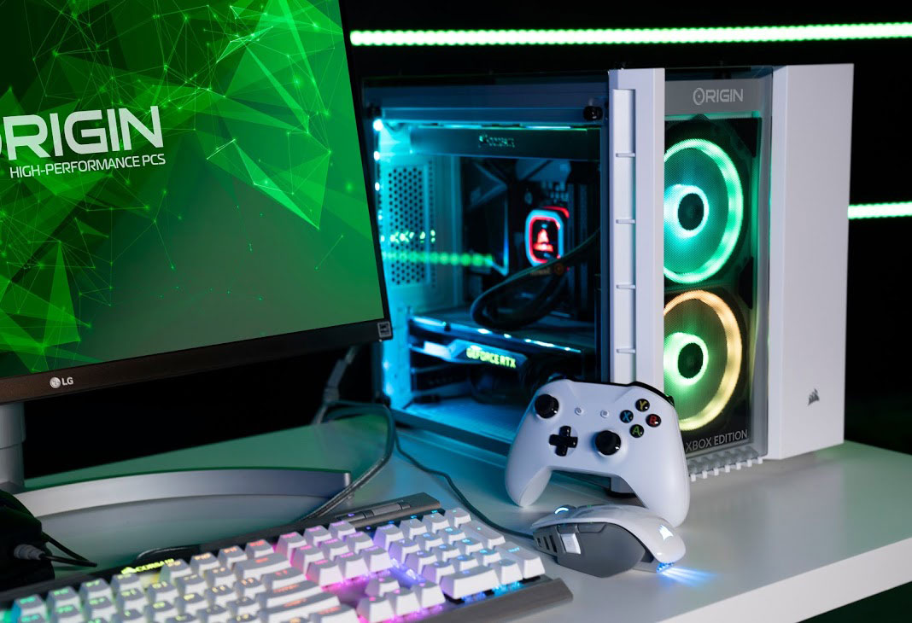
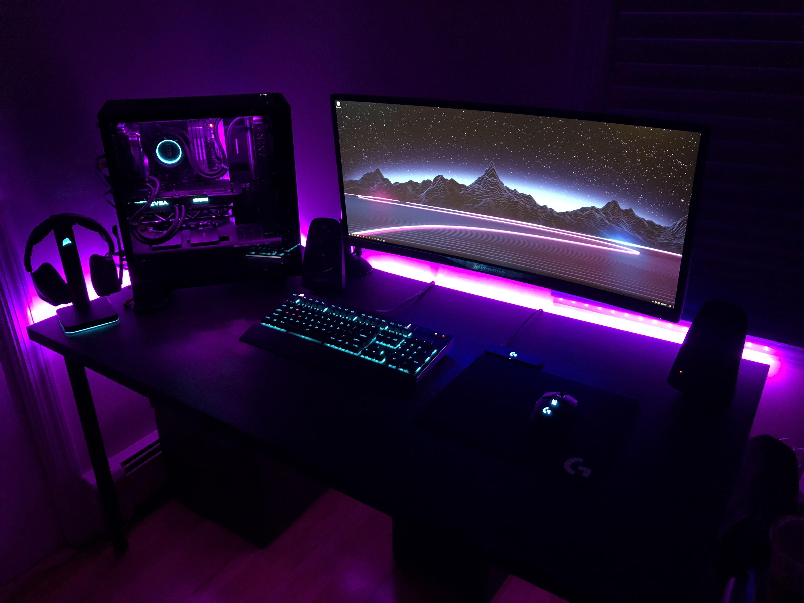
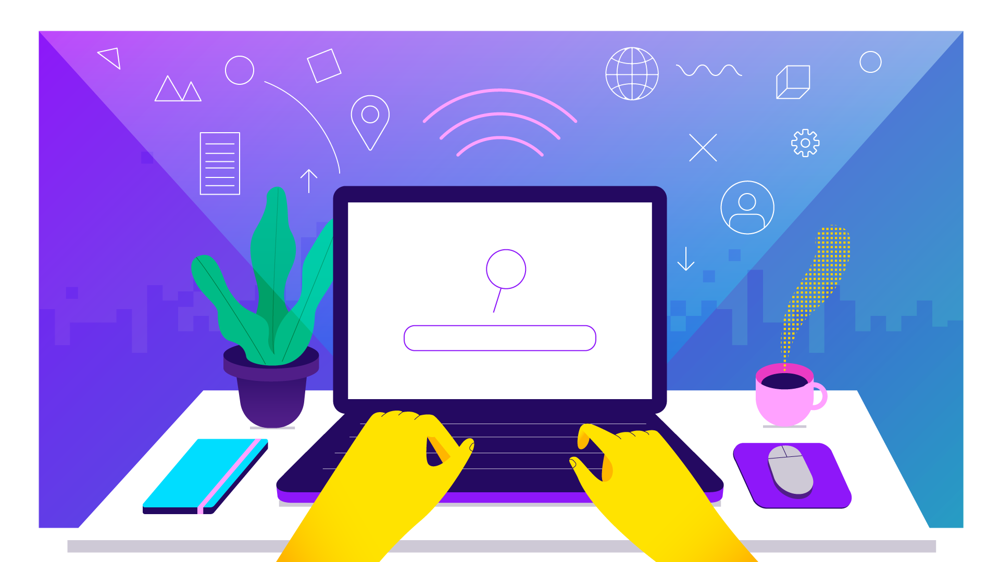
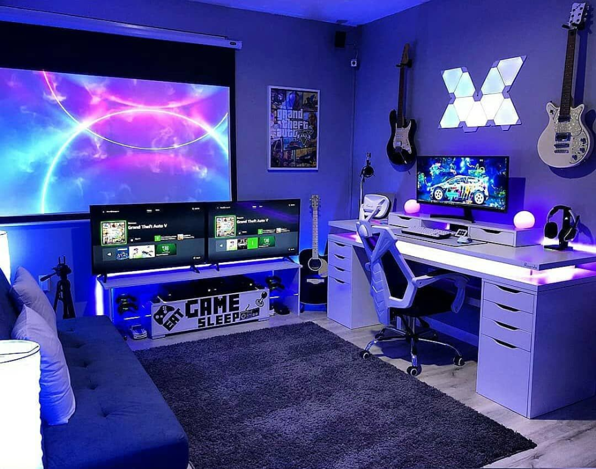
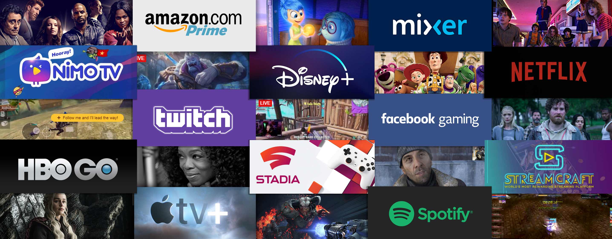
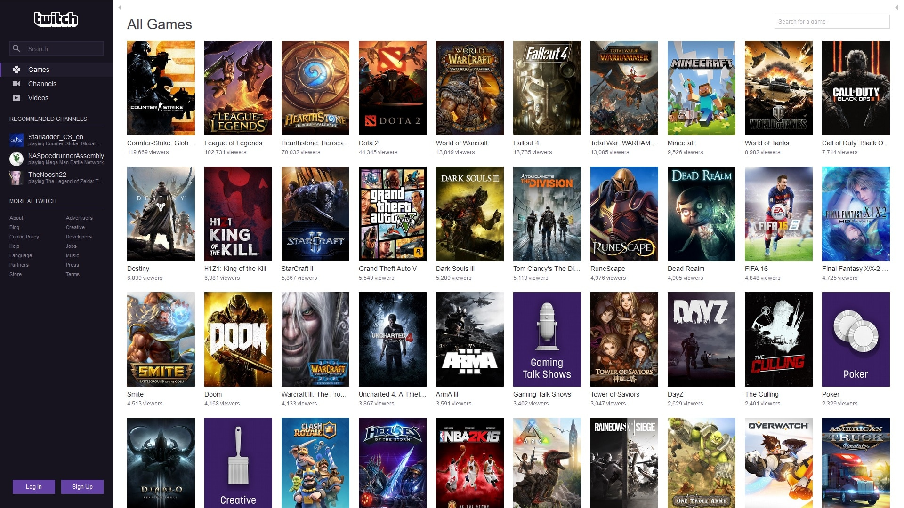

Você que busca dicas para ser um bom streamer, veio ao lugar certo!
Se você busca o seu lugar ao sol, junto dos principais streamers do Brasil e do mundo, você precisa aprender tudo o que puder sobre como ser um streamer. Seja você um iniciante ou mesmo um streamer já intermediário.
Muitos streamers começaram a fazer suas lives sem muito planejamento e aos poucos foram aperfeiçoando o trabalho. Experimentando, falhando e aprendendo até conseguir o resultado positivo que buscavam.
Todo esse processo de aprendizado faz parte, mas além de te dar bastante trabalho, ainda vai te consumir muito tempo.
Portanto, pensando nisso, organizamos para você estas principais dicas para crescer como streamer mais rapidamente.
As dicas para ser um bom Streamer são:
1. Escolha PC, console ou mobile

1. Escolha PC, console ou mobile
• Decida qual será a sua principal plataforma de streaming. Está é uma decisão simples mas que vai te dar a direção para o restante de seu trabalho.
• Aprender como fazer stream pelo celular, pelo console e pelo PC vai ampliar suas possibilidades de sucesso. Por isso, domine as técnicas de cada um e depois escolha a que melhor se sentir confiante.
2. Escolha os equipamentos e ferramentas
• Confira se você tem os equipamentos mínimos necessários para fazer uma stream.
• Se for fazer suas streams por dispositivos móveis, como um celular, confira se você tem todos os equipamentos necessários para isso.
Se você pretende fazer pelo PC, esteja atento às configurações de Hardware dele. Por exemplo:
• Processador
• Placa de Vídeo
• Memória
E, independente de onde você fará sua stream, para que você consiga ser visto e ouvido, não pode deixar de ter o kit básico:
• Microfone
• Câmera
3. Qualidade miníma de internet

3. Qualidade miníma de internet
• Atenção a qualidade de sua internet! Para fazer boas streams, sem travar nem ter queda na qualidade da imagem, você precisa de uma boa velocidade. Principalmente valores de Upload.
• E uma dica básica, mas de ouro: SEMPRE utilize a sua internet via cabo de rede!
• Ela é muito mais segura e estável.
4. Ambiente silencioso

4. Ambiente silencioso
• Escolha o comôdo mais silencioso da sua casa e que possua menos interferência em sua live.
5. Escolha a plataforma de stream

5. Escolha a plataforma de stream
• Se você está na dúvida em qual delas escolher, você pode utilizar o Restream. Com ele você poderá fazer live em várias plataformas simultaneamente. E dessa forma analisar em qual delas você alcança maior público ou mesmo se identifica melhor..
6. Escolha seu conteúdo

6. Escolha seu conteúdo
• Seja único, escolha seu próprio estilo de stream se diferencie da maioria.
• Quanto mais pessoas fazendo live do mesmo jogo, maior será sua concorrência.
7. Crie uma identidade
7. Crie uma identidade

• Seja você mesmo ou crie um alter ego
• Até mesmo as artes dos canais tente fazer com que combinem com sua personalidade.
8. Tenha uma conta para testes
8. Tenha uma conta para testes
• Conta exclusivamente para conferir se está tudo de acordo.
• Áudio
• Vídeo
• Qualidade de imagem
9. Conferir/Testar conexão
9. Conferir/Testar conexão
• Sempre confira se está tudo ok, antes de começar a livestream.
10. Use Tags na sua live
10. Use Tags na sua live

• Se você está transmitindo Minecraft, por exemplo, coloque tags que tenham relação.
• Sobrevivência
• PVP
• Português
11. Divulgação em redes socias
11. Divulgação em redes socias

• Tenha redes sociais que podem te ajudar a divulgar seu conteúdo e possuir intereção com seus seguidores.
• SEMPRE faça posts antes de iniciar suas streams.
12. Uma mão lava a outra
12. Uma mão lava a outra

• Interaja com outros streamers, iniciem streams juntos, façam parcerias inicialmente com aqueles com o mesmo publico e alcance que a sua live.
• Entre em grupos no Facebook sobre Streamers, Twitch, Mixer, etc.
13. Crie um cronograma
13. Crie um cronograma

• Escolha os melhores dias disponíveis na sua agenda para realizar stream e mantenha um padrão.
14. Inteja com seu público
14. Inteja com seu público

• Mesmo que tenha 0 pessoas na sua live nunca deixe ela em silêncio, sempre interagindo com seus viewrs fazendo com que se sintam parte da stream.
15. Inove de várias formas
15. Inove de várias formas

• Sempre traga algo para a stream seja informações, jogos ou até atrações.
• Notícias sobre jogos
• Informações do cenário
• Sua vida
16. Clips E Highlights
16. Clips E Highlights

• A Twitch tem uma ferramenta capaz de guardar os melhores momentos ou os mais engraçados de sua livestream
• Utilize ele para atrair pessoas novas para a sua live.
• Não esqueça de divulgar eles nas suas redes sociais.
17. Host e Raid
17. Host e Raid

• Ajude canais com Host ou Raids diversas vezes retribuem o favor.
• Utilize ele para atrair pessoas novas para a sua live.
• Não esqueça de divulgar eles nas suas redes sociais.
18. Se inspire em outros streamers e aprenda com eles
18. Se inspire em outros streamers e aprenda com eles

• Esteja sempre por dentro das estratégias que os canais maiores estão praticando.
• Absorva.
19. Intereções visuais
19. Intereções visuais

• Animações pós sub.
• Doações
• Widgets/Overlays
20. Emotes e badges(premiações)
20. Emotes e badges(premiações)

• Crie seus emotes e badges para seus futuros subs usarem.
• Seja criativo.
21. BÔNUS
21. BÔNUS

• Muitas pessoas acabam fazendo curso para serem streamers após não alcançaren suas metas ou até mesmo antes de tentarem.
• ISSO NÃO É OBRIGATORIAMENTE NECESSÁRIO!!!
• O Youtube possui diversos canais ensinando mais detalhadamente sobre toda as dificuldades de fazer stream e o passo-a-passo para superar ela, tudo completamente de graça.